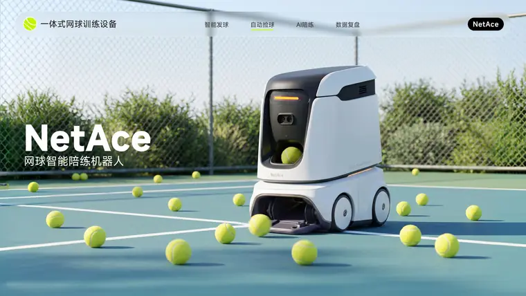
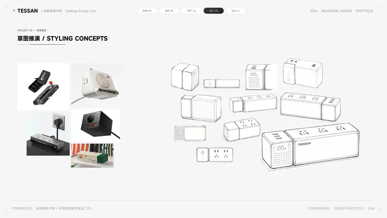
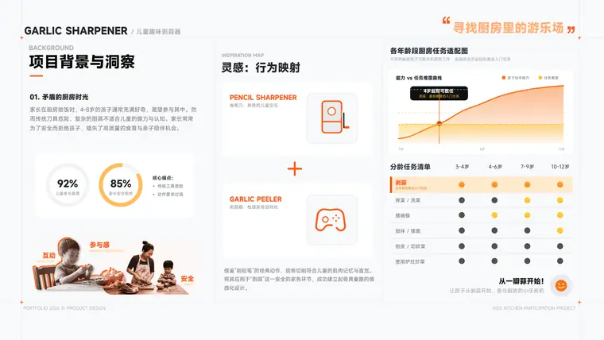
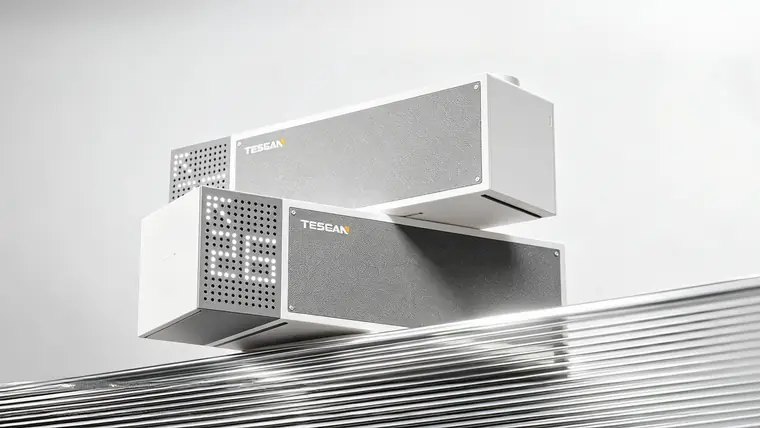

SCROLL
背景为学员作品 · 指到哪一页，就停在哪一页
学员覆盖院校 / TARGET SCHOOLS
清华大学江南大学同济大学湖南大学北京理工大学中国美术学院广州美术学院鲁迅美术学院武汉理工大学南京艺术学院浙江大学东南大学
清华大学江南大学同济大学湖南大学北京理工大学中国美术学院广州美术学院鲁迅美术学院武汉理工大学南京艺术学院浙江大学东南大学
我们相信 / OUR BELIEF
作品集不是把作业
排得好看一点。
复试只有十几分钟，导师翻你作品集的时间更短。
所以我们只训练一件事——让每一页都在回答同一个问题：
你为什么这样设计。
下面三个项目，都从一句“我想解决这个”开始，最后落到一份能被追问三十遍的作品集。 顺着推导往下翻，你看到的不是效果图，是判断。
0
页 / 平均项目篇幅
0
个 / 完整项目
0
轮 / 每份作品推敲
作品 / SELECTED WORKS
三个项目，
三种解题方式
以下作品均为学员复试作品集完整版。 点击任意作品进入项目浏览，顺着推导往下翻——这也是导师看你的方式。 共 38 页 · 支持 ← → 翻页


全部页面均为学员作品，部分院校作品已做脱敏处理。
调研资料 / RESEARCH
先有调研，
再谈设计
竞品拆解、用户画像、需求优先级、情绪曲线——这些不是作品集里最好看的部分， 但导师的每一个追问，答案都在这儿。点击任意一张，看完整页面。
作品集单页 / SELECTED PAGES
每一页，
都独立成立
来自不同项目、不同院校的作品集单页。一页只讲一件事，讲完就翻。 点击任意一页看大图 · 方向键翻页
均为学员作品，部分院校作品已做脱敏处理。
作品墙 / THE WALL
三十八页，
一次看完
调研、草图、建模、渲染、版式——一个项目的全部页面都在这里。
点任意一页，从那一页开始看。
悬停暂停 · 点击任意页面进入大图
作品背后 / THE PROCESS
四步，
把想法变成证据
每个项目都走同一条链路，但每一步都按选题重新推导。 点击左侧步骤，看这一步到底在解决什么。
STEP 01 / 定位
找到你的设计主张
先不画图。三个问题必须先有答案：你做过什么、目标院校在做什么、你能补上哪个缺口。 选题不是找一个“酷”的产品，而是找一个非你不可的问题。
- 个人经历与技能盘点，建立作品集主线
- 院校导师方向与近三年题目拆解
- 3 个备选选题评估，锁定 1 个主项目

STEP 02 / 推导
把想法讲成证据链
调研不是堆数据。竞品、用户、场景、机会点，每一步都要能指向下一页的结论。 导师问“为什么”的时候，你手里应该有答案。
- 竞品横向拆解与多维评估
- 用户访谈、画像与需求优先级
- 机会点推导 → 功能与形态定义
STEP 03 / 造型
从草图到可交付
形态推演、CMF、结构可行性，一个都不能省。作品集里的渲染图，必须经得起“它怎么开模”的追问。
- 手绘草图与形态推演过程页
- Rhino 建模规范与分面逻辑
- KeyShot 渲染、场景搭建与后期

STEP 04 / 叙事
12 页讲完一个项目
版式不是装饰。字号、留白、图注、翻页节奏，都在引导导师的注意力。 一页一个结论，翻完正好把项目讲完。
- 网格系统、字号层级与图注规范
- 项目节奏：封面—推导—高潮—落地
- 四轮推敲 + 打印打样校色
数字 / BY THE NUMBERS
数字不撒谎，
但也没那么重要。
真正重要的是：你能不能在一次对话里，把自己的设计讲清楚。
- 0 份完整作品集
- 0 所覆盖院校
- 0 页平均项目篇幅
- 0 年作品集教研
“导师记不住你的第 12 页，但他会记住你在第 3 页说过的那个判断。”
尖叫教研组 · 作品集批改原则学员反馈 / VOICES